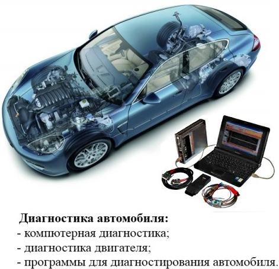

Диагностика автомобиля
Техническая диагностика автомобиля это совокупность целей и задач, связанных с поиском неисправностей механизмов и систем автомобиля, для их дельнейшего устранения. Диагностика автомобиля должна проводиться квалифицированными специалистами, которые имеют в своем распоряжении современное диагностическое оборудование. Только такой способ диагностирования позволит точно определить техническое состояние механизмов, систем и агрегатов автомобиля. Для проведения работ по диагностированию автомобиля создаются специальные участки диагностики автомобиля.
 С каждым днем расширяется типаж и производство новых моделей автомобилей. Интенсивный рост автотранспортных средств вызовет дальнейшее повышение затрат на их техническое обслуживание и ремонт.
В настоящее время для повышения эффективности диагностики, технического обслуживания и ремонта автомобилей принимается ряд радикальных мер: применяется агрегатно-участковый метод работ; создаются станции технического обслуживания; широко внедряется диагностирование.
Диагностика двигателя автомобиля дает новые возможности для автомобилистов, в получении данных о техническом состоянии систем и механизмов двигателя. Благодаря современным технологиям диагностирования...